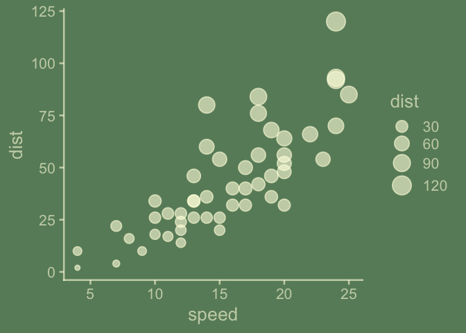

ggchalkboard is a teaching package. It shows examples of how to extend ggplot2 themes w/ version 3.5.1.9000, which has some significant updates!
I do not consider myself very gifted when it comes to thematic choices in ggplot2. But thematic choices can be ‘make or break’ when it comes to audience. I do like chalkboards and think I can do a reasonable job mimicking their look and that more gifted themers might learn from these efforts.
I welcome feedback on the thematic or coding choices.
We’ll be modifying a theme, since we don’t want to start from scratch – a theme contains a lot of decisions; to get a sense of that we can look at the length of the list object returned by ggplot2::theme_gray()
ggplot2::theme_gray() |> length()
#> [1] 139So let’s get to writing our theme, theme_chalkboard.
theme_classic <- ggplot2::theme_classic
theme_chalkboard <- function(paper = "darkseagreen4",
ink = alpha("lightyellow", .6),
accent = alpha("orange", 1),
base_size = 20,
base_theme = theme_classic,
...){
base_theme(paper = paper, ink = ink, base_size = base_size, ...) +
theme(geom = element_geom(accent = accent))
}
library(tidyverse)
ggplot(cars) +
aes(speed, dist) +
geom_point() +
geom_smooth()
#> `geom_smooth()` using method = 'loess' and formula = 'y ~ x'
last_plot() +
theme_chalkboard()
#> `geom_smooth()` using method = 'loess' and formula = 'y ~ x'
theme_blackboard <- function(paper = "grey27",
ink = alpha("whitesmoke", .6),
accent = alpha("palevioletred3", .8),
base_size = 20,
inherited = ggplot2::theme_classic,
...){
inherited(paper = paper, ink = ink, base_size = base_size, ...) +
theme(geom = element_geom(accent = accent))
}
last_plot() +
theme_blackboard()
#> `geom_smooth()` using method = 'loess' and formula = 'y ~ x'
theme_slateboard <- function(paper = "lightskyblue4",
ink = alpha("whitesmoke", .6),
accent = alpha("palevioletred3", .8),
base_size = 20,
inherited = ggplot2::theme_classic,
...){
inherited(paper = paper, ink = ink, base_size = base_size, ...) +
theme(geom = element_geom(accent = accent))
}
last_plot() +
theme_slateboard()
#> `geom_smooth()` using method = 'loess' and formula = 'y ~ x'
theme_whiteboard <- function(paper = "white",
ink = alpha("darkslateblue", .9),
accent = alpha("darkred", .9),
base_size = 20,
inherited = ggplot2::theme_classic,
...){
inherited(paper = paper, ink = ink, base_size = base_size, ...) +
theme(geom = element_geom(accent = accent))
}
last_plot() +
theme_whiteboard()
#> `geom_smooth()` using method = 'loess' and formula = 'y ~ x'
theme_glassboard <- function(paper = alpha("white", 0),
ink = alpha("midnightblue", .9),
accent = alpha("darkred", .9),
base_size = 20,
inherited = ggplot2::theme_classic,
...){
inherited(paper = paper, ink = ink, base_size = base_size, ...) +
theme(geom = element_geom(accent = accent))
}
last_plot() +
theme_glassboard()
#> `geom_smooth()` using method = 'loess' and formula = 'y ~ x'Further coordination can be done when it comes to scales:
scale_size_chalkboard <- function(...){
scale_size(range = c(2, 9), ...)
}
ggplot(data = cars) +
aes(x = speed, y = dist, size = dist) +
geom_point() +
theme_chalkboard() +
scale_size_chalkboard()
Color and fill scale are probably of greater interest, I know. Something to come back to.
Part II. Packaging and documentation 🚧
Phase 1. Minimal working package
Bit A. Created package archetecture, running devtools::create(".") in interactive session. ✅
devtools::create(".")Bit B. Added roxygen skeleton? 🚧
Use a roxygen skeleton for auto documentation and making sure proposed functions are exported. Generally, early on, I don’t do much (anything) in terms of filling in the skeleton for documentation, because things may change.
Bit C. Managed dependencies ? ✅
Package dependencies managed, i.e. depend::function() in proposed functions and declared in the DESCRIPTION
usethis::use_package("ggplot2")Bit D. Moved functions R folder? ✅
Use new {readme2pkg} function to do this from readme…
knitrExtra::chunk_names_get()
#> It seems you are currently knitting a Rmd/Qmd file. The parsing of the file will be done in a new R session.
#> [1] "unnamed-chunk-1" "unnamed-chunk-2"
#> [3] "unnamed-chunk-3" "theme_chalkboard"
#> [5] "unnamed-chunk-4" "theme_blackboard"
#> [7] "unnamed-chunk-5" "theme_slateboard"
#> [9] "unnamed-chunk-6" "theme_whiteboard"
#> [11] "unnamed-chunk-7" "theme_glassboard"
#> [13] "unnamed-chunk-8" "unnamed-chunk-9"
#> [15] "unnamed-chunk-10" "unnamed-chunk-11"
#> [17] "unnamed-chunk-12" "unnamed-chunk-13"
#> [19] "unnamed-chunk-14" "unnamed-chunk-15"
#> [21] "unnamed-chunk-16" "unnamed-chunk-17"
#> [23] "test_calc_times_two_works" "unnamed-chunk-18"
#> [25] "unnamed-chunk-19" "unnamed-chunk-20"
#> [27] "unnamed-chunk-21" "unnamed-chunk-22"
library(tidyverse)
knitrExtra:::chunk_to_r("theme_chalkboard")
#> It seems you are currently knitting a Rmd/Qmd file. The parsing of the file will be done in a new R session.
knitrExtra:::chunk_to_r("theme_blackboard")
#> It seems you are currently knitting a Rmd/Qmd file. The parsing of the file will be done in a new R session.
knitrExtra:::chunk_to_r("theme_whiteboard")
#> It seems you are currently knitting a Rmd/Qmd file. The parsing of the file will be done in a new R session.
knitrExtra:::chunk_to_r("theme_slateboard")
#> It seems you are currently knitting a Rmd/Qmd file. The parsing of the file will be done in a new R session.
knitrExtra:::chunk_to_r("theme_glassboard")
#> It seems you are currently knitting a Rmd/Qmd file. The parsing of the file will be done in a new R session.Bit E. Run devtools::check() and addressed errors. 🚧 ✅
devtools::check(pkg = ".")Bit F. Build package 🚧 ✅
devtools::build()Bit G. Write traditional README that uses built package (also serves as a test of build. ✅
The goal of the {ggchalkboard} package is to make it easy to theme ggplots like chalkboards
Install package with:
Once functions are exported you can remove go to two colons, and when things are are really finalized, then go without colons (and rearrange your readme…)
library(ggchalkboard)
library(ggplot2)
ggplot(data = cars) +
aes(x = speed) +
geom_histogram() +
ggchalkboard:::theme_chalkboard()
ggchalkboard:::geoms_chalk_on()
last_plot()
ggchalkboard:::geoms_chalk_off()
last_plot()Bit H. Chosen a license? ✅
usethis::use_mit_license()Bit I. Add lifecycle badge (experimental) ✅
usethis::use_lifecycle_badge("experimental")Phase 2: Listen & iterate 🚧
Try to get feedback from experts on API, implementation, default decisions. Is there already work that solves this problem?
Phase 3: Let things settle
Bit B. Written formal tests of functions and save to test that folders 🚧
That would look like this…
library(testthat)
test_that("calc times 2 works", {
expect_equal(times_two(4), 8)
expect_equal(times_two(5), 10)
})
knitrExtra:::chunk_to_tests_testthat("test_calc_times_two_works")Phase 4. Promote to wider audience…
Bit A. Package website built? ✅
usethis::use_pkgdown()
pkgdown::build_site()Appendix: Reports, Environment
Edit Description file
readLines("DESCRIPTION")
#> [1] "Package: ggchalkboard"
#> [2] "Title: What the Package Does (One Line, Title Case)"
#> [3] "Version: 0.0.0.9000"
#> [4] "Authors@R: "
#> [5] " person(given = \"First\","
#> [6] " family = \"Last\","
#> [7] " role = c(\"aut\", \"cre\"),"
#> [8] " email = \"first.last@example.com\","
#> [9] " comment = c(ORCID = \"YOUR-ORCID-ID\"))"
#> [10] "Description: What the package does (one paragraph)."
#> [11] "License: MIT + file LICENSE"
#> [12] "Encoding: UTF-8"
#> [13] "LazyData: true"
#> [14] "Roxygen: list(markdown = TRUE)"
#> [15] "RoxygenNote: 7.2.3"
#> [16] "Depends: "
#> [17] " R (>= 2.10)"
#> [18] "Imports: "
#> [19] " ggplot2"Environment
Here I just want to print the packages and the versions
all <- sessionInfo() |> print() |> capture.output()
all[11:20]
#> [1] ""
#> [2] "time zone: America/Denver"
#> [3] "tzcode source: internal"
#> [4] ""
#> [5] "attached base packages:"
#> [6] "[1] stats graphics grDevices utils datasets methods base "
#> [7] ""
#> [8] "other attached packages:"
#> [9] " [1] lubridate_1.9.3 forcats_1.0.0 stringr_1.5.1 dplyr_1.1.4 "
#> [10] " [5] purrr_1.0.2 readr_2.1.5 tidyr_1.3.1 tibble_3.2.1 "
devtools::check() report
devtools::check(pkg = ".")